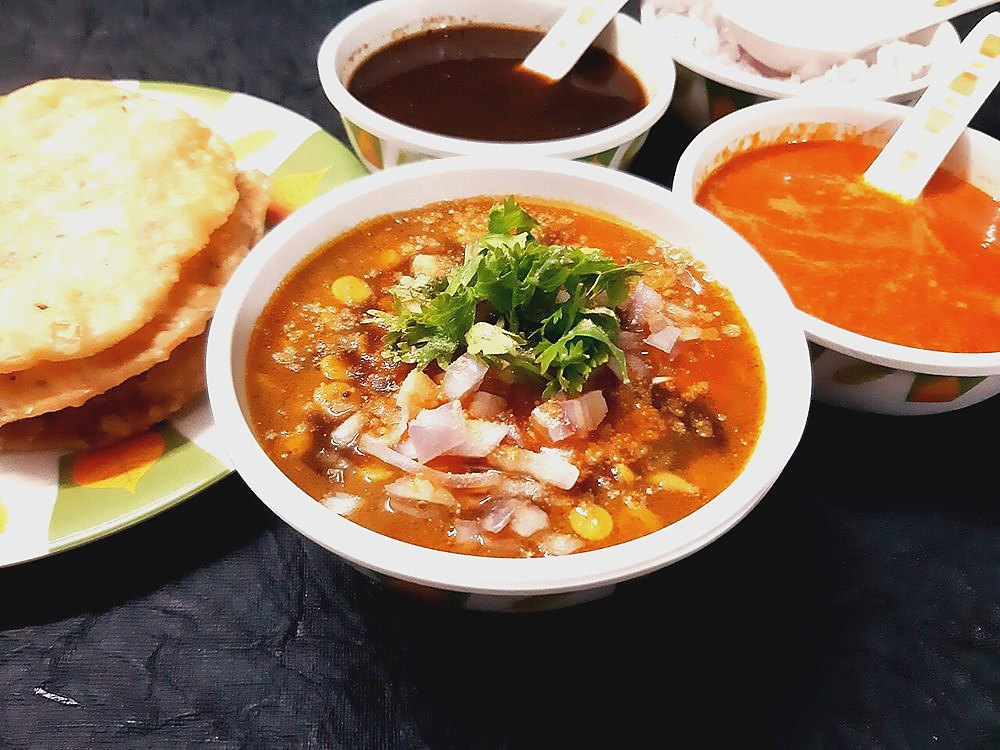

Allergens: none of the common ones
Ingredients
Quantities for 4.
- 1/3 cup Chana Dal
- 1/3 cup, split and skinless Moong Dal
- 1/3 cup, split and skinless Urad Dal
- 1 medium, finely chopped Onion
- 2 medium, chopped Tomato
- 8 cloves, sliced Garlic
- 2cm piece, grated Ginger
- 2, slit Green Chilli
- 3 tbsp Neutral Oil
- 1 tsp Cumin Seeds
- 1/4 tsp Asafoetidause compounded-free hing to keep this gluten-freeoptional
- 3/4 tsp Turmeric
- 1 tsp Chilli Powder
- 1/2 tsp Garam Masalaoptional
- 3 tbsp, chopped Coriander Leavesoptional
- 1/2, juiced Lemon
- to taste Salt
- 3.5 cups Water
Cookware
stovetop, pressure cooker
Before you start
- Soak the chana dal separately for 30 minutes — it is the toughest of the three and will otherwise still be firm when the moong has dissolved.
- Rinse all three dals until the water runs clear, four or five changes. Cloudy dal foams over in the cooker.
- Add salt only after the dal is cooked; early salt keeps the chana dal grainy.
Method
- Drain the soaked chana dal and pressure cook all three dals with the water, turmeric and green chilli for 12 minutes, about 3 whistles.Let the pressure drop on its own. Forcing it makes the dal watery and grey.
- Open the cooker and whisk the dal briefly — you want the moong broken down but the chana still holding as distinct grains.
- Heat the oil in a small pan and crackle the cumin seeds for 20 seconds.
- Add the asafoetida and the sliced garlic and fry 1 minute until the garlic is golden but not brown.Garlic goes from gold to bitter in about 15 seconds. Pull it the moment it colours.
- Add the onion and ginger and fry 6 minutes until the onion is soft and lightly browned.
- Stir in the tomato and chilli powder and cook 6 minutes until the tomato collapses to a jammy mass.
- Pour the tempering into the dal, add salt, and simmer 8 minutes so the flavours settle.If it thickens past a pourable consistency, loosen it with hot water, never cold.
- Stir in the garam masala and lemon juice off the heat.
- Scatter the coriander leaves and serve with plain rice.
Storage
Keeps 4 days refrigerated and thickens considerably. Reheat with 1/4 cup hot water per portion and re-check the salt.
Nutrition Good estimate
| Per serving192 g | Per 100 g | |
|---|---|---|
| Calories | 320+ kcal | 166+ kcal |
| Protein | 13.3+ g | 6.9+ g |
| Carbohydrate | 42.4+ g | 22.0+ g |
| of which sugars | 7.5+ g | 3.9+ g |
| Fibre | 9.9+ g | 5.1+ g |
| Fat | 12.3+ g | 6.4+ g |
| of which saturated | 1.4+ g | 0.7+ g |
| of which unsaturated | 10.0+ g | 5.2+ g |
The + means ingredients given to taste rather than by weight are counted as zero, so the true figure is a little higher than shown. Worked out from the listed quantities; most of the ingredient list could be weighed. Ingredients given to taste rather than by weight are counted as zero, so the real figure is a little higher than this. The + says so. Some ingredients have no exact match in the nutrient database and use the nearest equivalent: asafoetida, garam masala, urad dal. Estimated from raw ingredients using USDA FoodData Central. Cooking changes are not modelled, and added salt is excluded, so sodium is not given.
Recipe v1.0.0, last updated 2026-07-31. Curated for Khaana and kept under version control.